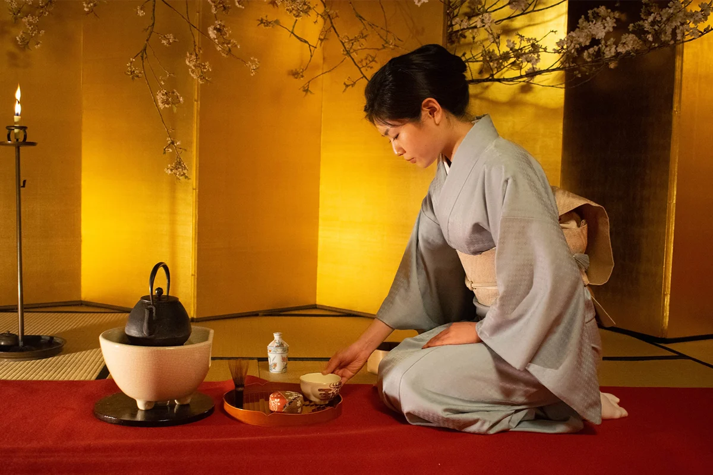
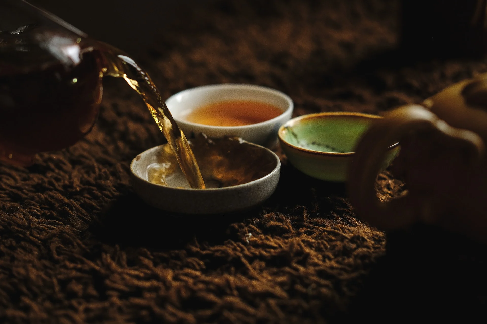
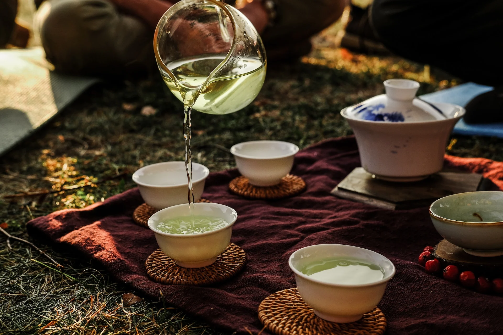
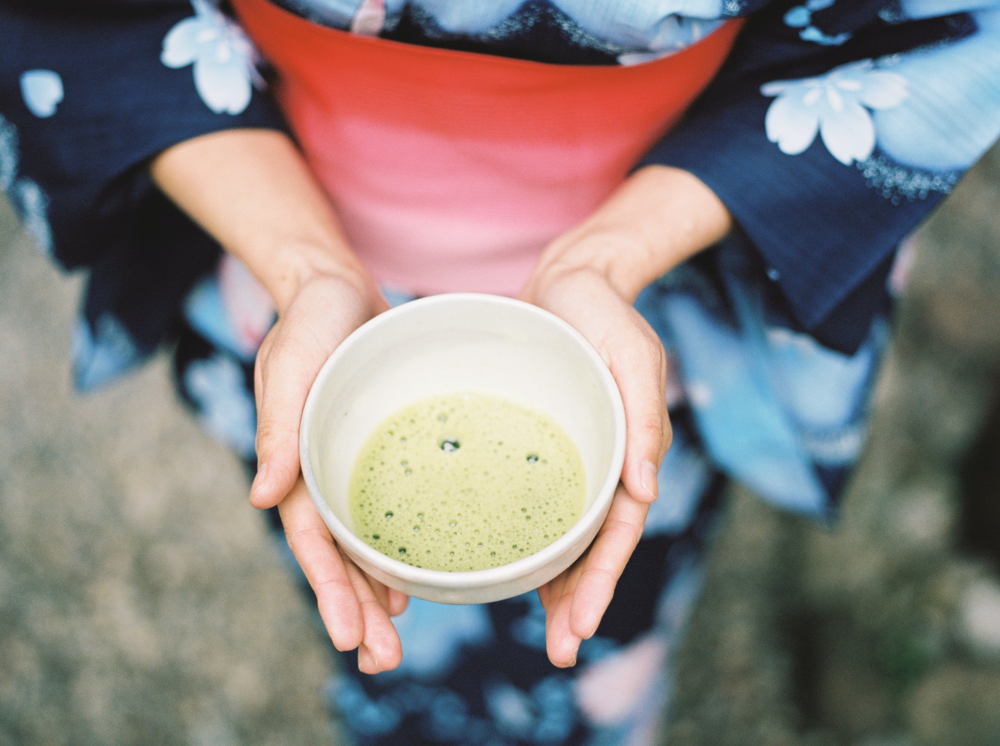
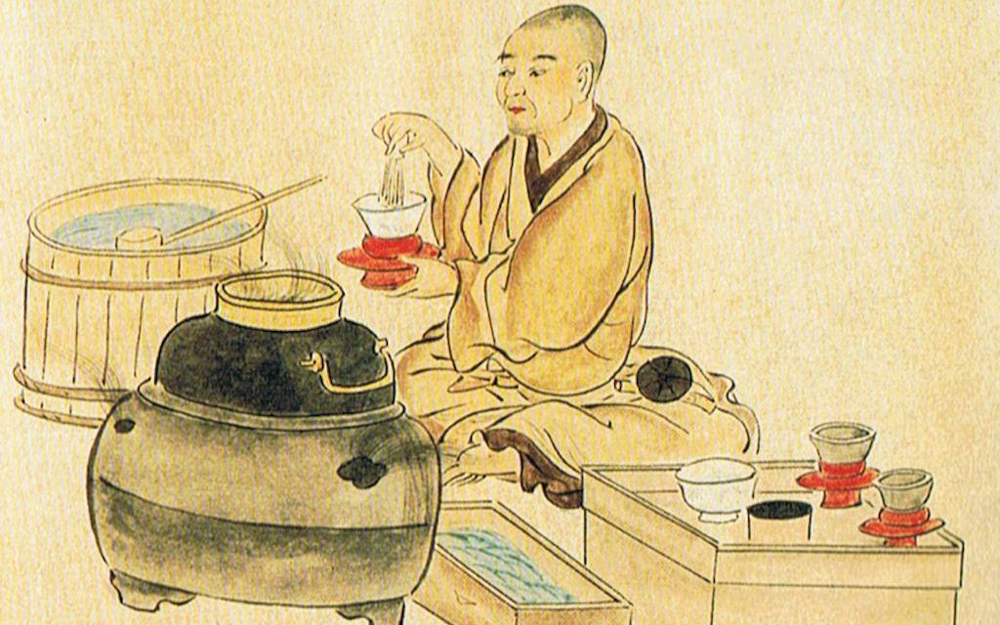

Поймать дзен и очистить душу. Чайные
церемонии: что это, какие правила проведения и
что для этого нужно

Чай — это не просто напиток. На самом деле это целая культура,
охватывающая века истории, философии и традиций.
Так же и чайная церемония является уникальным сочетанием
искусства, различных ритуалов и глубокой духовности.
Такие церемонии, распространенные
в разных культурах мира, не только демонстрируют гармонию
и спокойствие, но и служат средством расслабления и внутреннего
восстановления.
В этом материале мы рассмотрим, что такое чайные церемонии,
как они помогают человеку расслабиться и обрести внутреннее
спокойствие. Также мы расскажем о правилах проведения
этого действа и узнаем, то необходимо для организации
чайной церемонии.
Поэтому оставайся с нами, ведь все самое интересное о чайной
церемонии рассказываем далее в материале.
Чайная церемония: что это такое
Согласно определению Кембриджского словаря, чайная церемония
— это ритуал, во время которого чай готовят, подают и пьют
особым традиционным способом. Особенно это распространено в
Азиатских странах, в частности, в Китае, Японии или Корее.
В каких странах проводят чайные
церемонии
Чайные церемонии распространены во многих культурах мира,
каждая из которых имеет свои уникальные традиции и обряды.
Поговорим о некоторых из самых известных:
Япония
Японская чайная церемония основана на принципах дзен-буддизма
и основана на почитании прекрасного в повседневной жизни. Он
известен своей сложной и медитативной природой.
Японская чайная церемония охватывает древние ритуалы
приготовления и подачи традиционного японского зеленого чая.
Китай
Китайская чайная церемония отличается своим искусством
приготовления чая.Оно заключается в использовании
высококачественного чая, специальной посуды и особых техник
заваривания.

Корея
Корейская чайная церемония отличается своей простотой и
элегантностью. Она часто сосредоточена на размышлениях и
фокусируется на гармонии с природой.
Марокко
В Марокко чайная церемония заключается в приготовлении
зеленого чая с горной мятой. Это социальный ритуал,
сопровождающийся гостеприимством и разговорами.
Великая Британия
Английская чайная церемония, известная как чаепитие,
заключается в подаче черного чая с молоком или лимоном,
а также разнообразных сладостей, сэндвичей и пирогов.
Как проводят чайную церемонию
Говоря о чайных церемониях, чаще всего имеется в виду
именно японская вариация. Поэтому давайте поговорим о
ее правилах проведения и что нужно для этого ритуала.
В издании Britannica рассказывают, что церемония
происходит в чайном доме, который в идеале является
небольшим сооружением, отделенным от основного дома.
Но часто для чайных церемоний используют просто
отдельную комнату в доме.
Комната обычно имеет площадь около 3 метров. На одном
конце есть токонома (ниша в стене японского жилища),
в которой висит свиток или цветочная композиция.
В комнате также есть небольшой глубокий камин, который
используется зимой для подогрева чайника. Летом для
этого используется переносной мангал, а саму церемонию
проводят в саду.

Подготовка к чайной церемонии
Как объясняют в издании Japanese Green Tea, фактически,
чайная церемония начинается с момента, как хозяин или
хозяйка присылают официальные приглашения. Затем наступает
время, когда хозяин дома подготавливает свою душу, чтобы
она могла оставить все мысли позади и начать
сосредотачиваться на том, чтобы впитать в себя ощущение
равновесия и гармонии.
Перед участием в церемонии гости должны духовно
подготовиться, отказавшись от повседневных забот и
очистив свои мысли и сердца.
Также важную роль в этом действе играет одежда.
Японская чайная церемония имеет свой дресс-код.
Не стоит надевать яркую одежду и пользоваться духами,
поскольку это может отвлекать от самого процесса.
Если тебя пригласили на японскую чайную церемонию — лучше
надеть скромную одежду и снять украшения, ведь они могут
повредить посуду.
В назначенный день, гости ожидают снаружи до момента, пока
хозяин даст знак о готовности встретить их в чайной комнате
или саду.
Перед входом нужно помыть руки. Это символизирует очищение
от “пыли” внешнего мира. После получения сигнала от
хозяина, гости кланяются и проходят через низкую дверь.
Этот акт считается проявлением уважения к хозяину и
благодарности за его старания в подготовке к церемонии.
Очистка инструментов
Этот этап фактически начинает приготовления японского
зеленого чая. Обычно, для японских чайных церемоний
используют матча, но хозяин может выбрать и другой
зеленый чай.
Всю необходимую посуду хозяин выносит и очищает перед
гостями, используя изящные движения и жесты. Во время
этого процесса внимание настолько сосредоточено, что
запрещено делать какие-либо лишние движения или
что-то говорить.
Приготовление чая
После очистки инструментов, их изящно размещают, и
начинается процесс приготовления матча. Хозяин использует
чайную миску, добавляя три мерные ложки чая на каждого
гостя. Затем в миску добавляют воду, и быстрыми
движениями формируется гладкая паста.Далее
постепенно доливается вода.

Подача
Чайная миска передается Сёкяку — главному гостю,
инициируя обмен между участниками. Сёкяку сначала
осматривает миску, поворачивает ее и делает глоток.
После этого гость осторожно вытирает край миски и
передает ее следующему гостю рядом. Каждый гость
повторяет эти действия и передает миску дальше.
Так процесс продолжается, пока все гости не
попробуют изысканный зеленый чай. В конце миска
возвращается к хозяину.
Завершающий этап церемонии
После того как миска возвращается к хозяину, он или она
начинает чистить миску, чайную чашку и ложку. Участники
церемонии наблюдают за этим процессом, чтобы проявить
свое восхищение и уважение к хозяину. Они детально
проверяют посуду и инструменты, демонстрируя внимание
и уважение.
Посуда осторожно протирается тканью, после чего хозяин
аккуратно складывает все инструменты. На этом этапе
гости имеют возможность выйти, перед этим поклонившись,
чем они символически подчеркивают завершение церемонии.
Оборудование для японской чайной церемонии
Оборудование имеет большое значение для проведения японской
чайной церемонии. Оно не только необходимо для правильного
приготовления чая, но и играет ключевую роль в ритуальном и
эстетическом аспектах церемонии. Поэтому для проведения
этого ритуала используют следующие предметы:
• Чаван — большая керамическая чайная миска, в которой готовят
и подают чай.
• Кюсу — традиционный японский чайный для проведения чайных
церемоний.
• Часен — бамбуковый венчик, который используется для взбивания
матча с водой до пенистой консистенции.
• Чашаку — традиционная чайная ложка, обычно изготовленная из
бамбука, для дозирования чая.
• Фуруки — ситечко для чая, которое используется для просеивания
матча, чтобы избежать комочков.
• Чакин — ткань для протирания чайника.
И это лишь основные предметы, которые используются в чайной
церемонии. Но в зависимости от стиля и традиций различных
регионов Японии, этот список может варьироваться.

Заключение
В заключение необходимо отметить, что чайная церемония в Китае
– это древняя традиция, берущая свое начало еще до нашей эры.
Она направлена на сближение, умиротворение и получение
истинного удовольствия. Во время нее не принято заводить
деловые беседы, строго запрещается спорить, нервничать и
повышать голос. Приветствуется молчание, беседы об искусстве
и религии. В современном Китае чаепитие проводится, чтобы
отдать дань своим предкам, почтить родителей, высказать свою
благодарность и почтение.Но, китайская церемония чаепития
получила признание и распространение и в других странах Европы
и Азии, в том числе России, Японии, Англии, Южной Кореи.